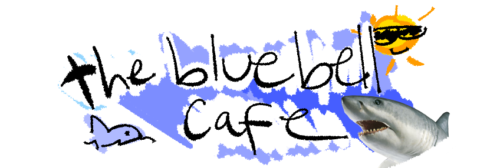

this is a test page
"Dad, do I have to go? Yes, it'll be fine" "Mom?" "It's okay, sweetie, granny's awesome You're gonna have a good time" "I don't want to be here" Granny's house I don't wanna stay, I just wanna go home I don't wanna be at granny's house She be creeping me out Take me home right now I don't wanna stay at granny's house I don't wanna stay, I just wanna go home I don't wanna be at granny's house She be creeping me out Take me home right now, I don't wanna stay here Oh, jeez, this place gives me the creeps "Hey, granny, I'm here" "Just a minute, dear" "Is there anything to eat?" "Oh, what smells like pickled feet?" "Do you wanna play hide and seek?" "Uh, no, thank you, but is your TV broke?' And why is the front door so locked up so much?" (Hm) "Is that some kinda joke? Wait, why do you have a bat? What are you gonna do with that? Get back!" (Ow) I think that something cracked And then I woke up in a different room Sweating and confused Did she hit me? 'Cause I'm feeling it and I bet she left a bruise Oh, this lady crazy, I've gotta escape But now there's bear traps that's surrounding the place What am I gonna do? I gotta run 'Cause she's after me, but I don't know what I've done Cell phone's only got one bar Let me hide and try to call my mom Granny's house, something's really weird I'm feeling kinda scared, please get me out of here Granny's house She locked all the doors, I can't find the keys Don't wanna be here no more Granny's house I don't wanna stay, I just wanna go home I don't wanna be at granny's house It's really creeping me out Take me home right now, I don't wanna stay here "Hello, hello, oh no" "Hehehe, where'd you go?" "Wait, what's that shiny glow? It's a key, that's what it be But what door's it for, I gotta see Yes, it's the front door, but there's still a board I gotta cut a cord and there's another lock?" Now I'm hearing creaks all up the floor That's coming towards, she's above top Ran down to the second basement, my face was in shock 'Cause I found a car, but it wouldn't start Then I got a hammer from the glove box "I see you" "Yeah, I'm sure that you do" Now, why on earth in the toilet are there pliers? I could probably use these to cut the blue wires Now all I need is the key to escape granny's house, so I can be free Then I got a yellow key, that got me a crossbow and tranquilizer (tranquilizer) Popped up right behind her, then I surprised her Fired a shot-shot, then she dropped-dropped Granny's house, now I got the key So I'm about to peace out, yeah, it's time to leave granny's house Time to say goodbye, I feel like I could cry, can't believe that I survived Granny's house, finally getting out And I'm not looking back, no longer trapped at granny's house But still I'm all alone, I gotta get home, but don't know which way to go Right now, I'm looking for a savior So I went to her neighbor's "Hello? You gotta help me" "Oh yeah, quick, get inside"